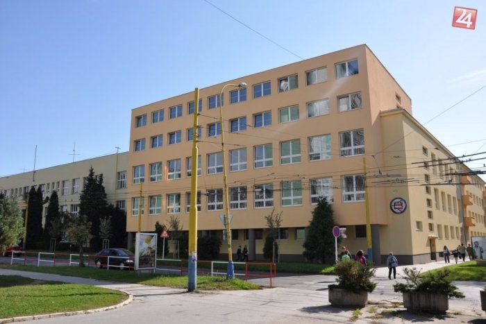
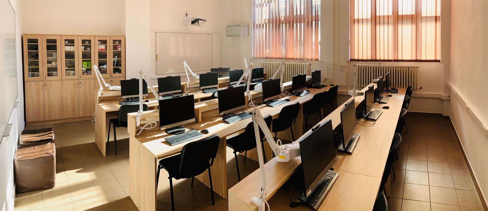
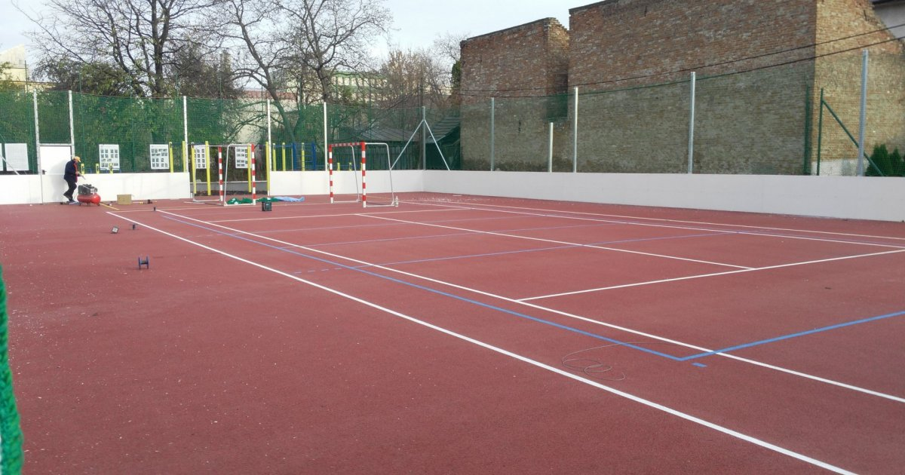

Život na našej škole objektívom
Pozri si, ako to u nás vyzerá. Od moderných labákov, kde vznikajú tvoje projekty, až po miesta, kde si po škole vydýchneš.

Naša základňa
Historická budova vybavená najmodernejšou technikou.

IT Svet
Tu meníme riadky kódu na fungujúce aplikácie.

Pohyb a tímovosť
Naše ihrisko je srdcom športových úspechov školy.